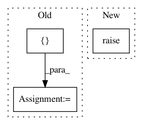

1edcc86eb40c55259fff85ec4e14b4373a6bb589,nilmtk/metergroup.py,MeterGroup,plot,#MeterGroup#,1132
Before Change
// Load data and plot each meter
for meter in self.meters:
power_series = meter.power_series_all_data(
sections=[timeframe], preprocessing=[Apply(func=resample_func)])
ax = plot_series(power_series, ax=ax, label=meter.appliance_label())
if plot_legend:
plt.legend()
After Change
plt.legend()
elif kind == "summed":
ax = super(MeterGroup, self).plot(**kwargs)
return ax
In pattern: SUPERPATTERN
Frequency: 3
Non-data size: 3
Instances
Project Name: nilmtk/nilmtk
Commit Name: 1edcc86eb40c55259fff85ec4e14b4373a6bb589
Time: 2014-12-09
Author: jack-list@xlk.org.uk
File Name: nilmtk/metergroup.py
Class Name: MeterGroup
Method Name: plot
Project Name: Rostlab/nalaf
Commit Name: ebe4256914107273feb1da940fc3e4237731365e
Time: 2016-11-11
Author: i@juanmi.rocks
File Name: nalaf/preprocessing/edges.py
Class Name: SimpleEdgeGenerator
Method Name: generate
Project Name: dnouri/skorch
Commit Name: 892065c8339f9c20d36127645ba3ae169577f47b
Time: 2020-06-27
Author: b.bossan@gmail.com
File Name: skorch/classifier.py
Class Name: NeuralNetClassifier
Method Name: predict